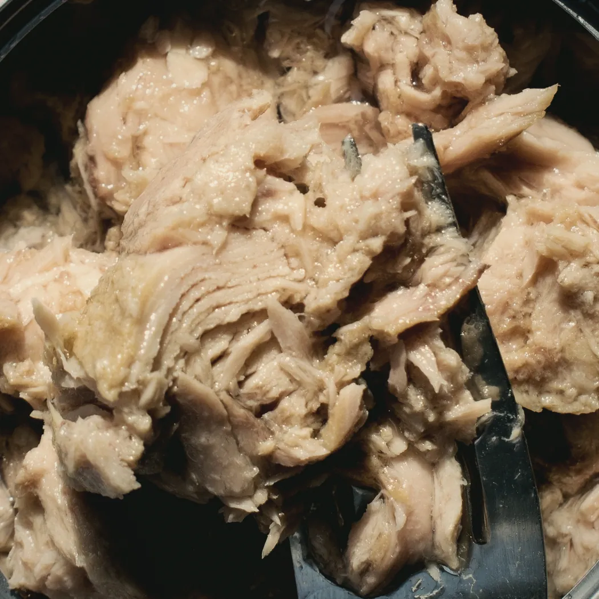
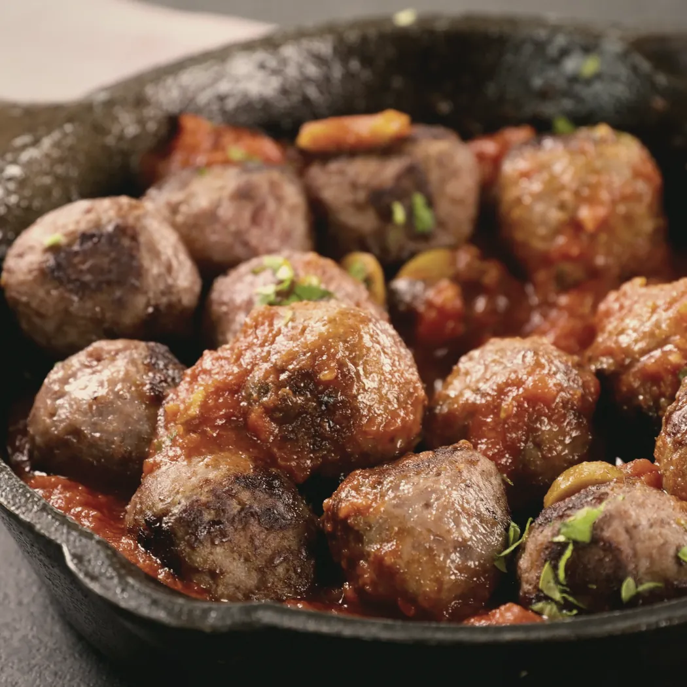
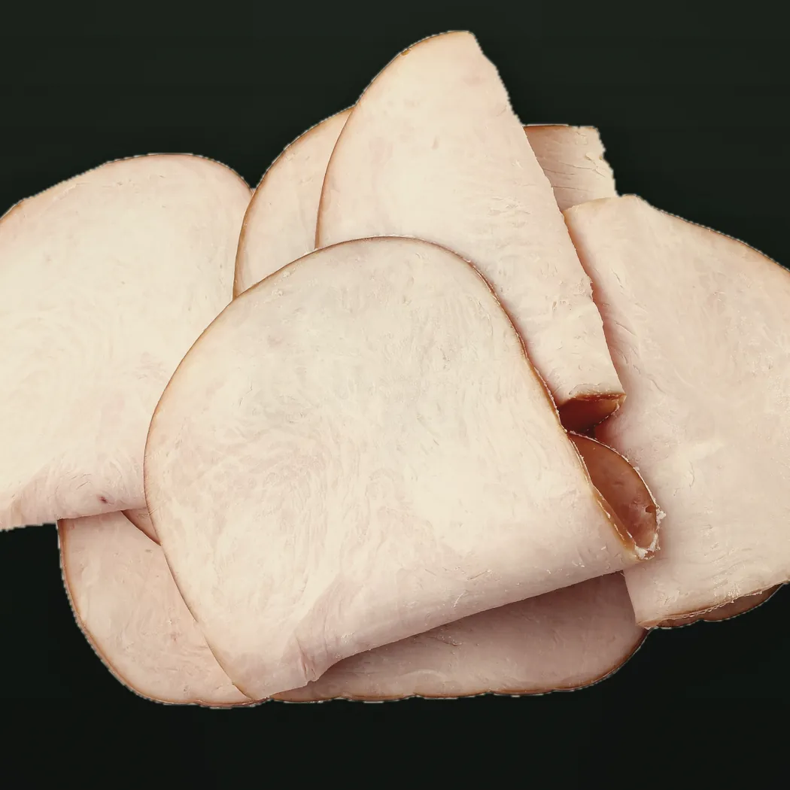
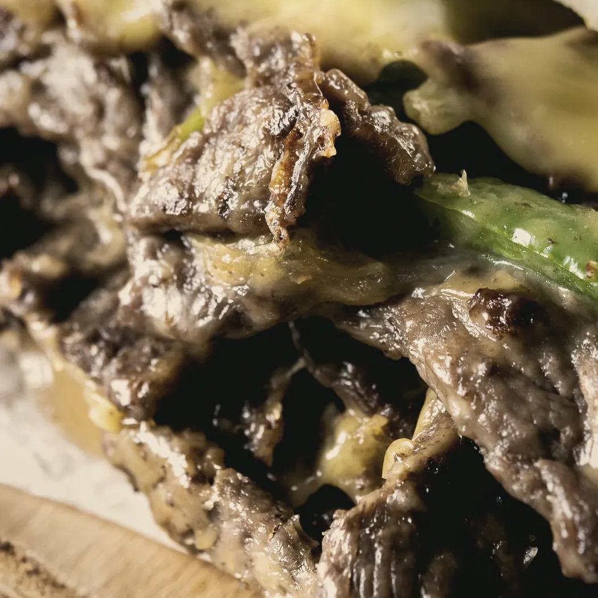

Arriba está tu sándwich en corte: se llena capa por capa a medida que eliges, y el «//» de la marca, que siempre fue el corte del pan, lo atraviesa. WICHO pregunta con su voz. Las etapas van en el orden del mostrador (pan, proteína, queso, verdes, salsas), y cualquiera se toca para volver. El tamaño se cambia sobre el mismo sándwich, que se estira. Una sola pantalla que cambia de contenido: nada de seis pantallas.
←SND//WCH1
Classic
Res
15CM30CM
¿Qué va adentro? Elige una.
✓ PanProteínaQuesoVerdesSalsas

AtúnHouseS/23.90

AlbóndigaMarinaraS/23.90

PavoHorneadoS/24.90

ResLaminadaS/23.90
15CM · Classic · ResS/23.90
1 · Eligiendo la proteínaTarjetas con foto, precio a la vista. Al tocar, la capa aparece en el corte.